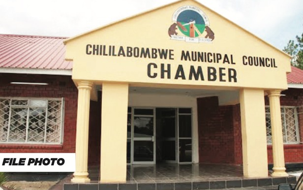

Community Improvement Tips
Organize cleanups and promote green spaces.

Create and maintain community gardens.
Educate residents through programs.
Support local businesses and entrepreneurship.
Our ward is dedicated to fostering community spirit, improving living standards, and promoting sustainable local development.
Chililabombwe (formerly Bancroft) is a historic mining town located in Zambia’s Copperbelt Province, just a few kilometers from the Democratic Republic of Congo border. The ward lies at 1,360 meters above sea level, offering a cool climate and a diverse landscape of rivers, hills, and fertile land. This geographical advantage has made Chililabombwe both a hub for copper mining and a place where agriculture and trade flourish side by side.
The name Chililabombwe translates to “place of the croaking frog” in the Lamba language, reflecting its cultural and environmental roots.
In 2010, the town had approximately 90,530 residents, while the Chililabombwe District recorded a population of 141,899. Today, the ward continues to experience growth driven by mining, trade, and migration.
Organize cleanups and promote green spaces.
Create and maintain community gardens.
Educate residents through programs.
Support local businesses and entrepreneurship.
Our ward actively participates in community-driven initiatives that focus on improving infrastructure, providing safe and clean drinking water, and enhancing the quality of life for every resident. From road maintenance, drainage systems, and market shelters, to borehole drilling and sanitation programs, our projects are designed to create sustainable growth and empower the people of Chililabombwe. We believe that every development, whether small or large, contributes to the overall well-being of our community.
We are committed to strengthening education through the construction and rehabilitation of schools, libraries, and ICT centers. By providing access to quality learning materials and promoting teacher training, our ward seeks to ensure that every child has the opportunity to unlock their potential. Programs such as adult literacy classes and skill development workshops also empower the wider community to adapt to today’s evolving economy.

Healthcare access is at the heart of our development agenda. We continue to support local clinics, maternal health programs, vaccination drives, and community health awareness campaigns. Our focus is not only on curing illness but also on preventing it through nutrition programs, clean water initiatives, and sanitation projects. A healthy population is a productive population, and our ward is committed to building a future where no one is left behind.

Culture is the soul of our community. In Chililabombwe, we celebrate diversity through traditional dances, music festivals, sporting events, and cultural exhibitions. These activities not only strengthen community identity but also create platforms for young people to express their creativity and talents. Recreation spaces such as playgrounds and sports fields encourage unity, wellness, and a vibrant social life across generations.
Visit mining sites, local parks, and cultural centers.
Yes, but standard precautions are always recommended.
Buses, taxis, and private transport are available.
Try nshima, fried fish, and local vegetable dishes.
Traditional dances, music events, and mining celebrations.
Chililabombwe Constituency Office
+260 XXX XXX XXX
info@chililabombwe.gov.zm